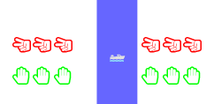

\documentclass[tikz]{standalone}
\usepackage{ifthen}
\usepackage{fontawesome}
\usetikzlibrary{positioning}
\usetikzlibrary{chains}
\usetikzlibrary{shapes.multipart}
% SEE https://tex.stackexchange.com/questions/198813/how-to-make-a-boat-symbol-in-latex
\newcommand*{\myboatleft}{%
\protect\raisebox{-0.0000165em}{%
\protect\begin{tikzpicture}[ x=0.08em, y=0.08em, xscale=0.05, yscale=-0.05, inner
sep=0pt, outer sep=0pt, rotate=90]
\protect\path[fill=cyan!40] (99.9880,49.1240) .. controls (97.9470,49.1240) and (95.9760,48.6600) ..
(94.2380,47.8720) .. controls (92.4520,47.0370) and (90.4350,46.5500) ..
(88.3470,46.5500) .. controls (86.2380,46.5500) and (84.2200,47.0370) ..
(82.4350,47.8720) .. controls (80.6720,48.6600) and (78.7240,49.1240) ..
(76.6840,49.1240) .. controls (74.6660,49.1240) and (72.6950,48.6600) ..
(70.9560,47.8720) .. controls (69.1710,47.0370) and (67.1530,46.5500) ..
(65.0430,46.5500) .. controls (62.9560,46.5500) and (60.9390,47.0370) ..
(59.1530,47.8720) .. controls (57.3910,48.6600) and (55.4430,49.1240) ..
(53.4030,49.1240) .. controls (51.3620,49.1240) and (49.4140,48.6600) ..
(47.6740,47.8720) .. controls (45.8890,47.0370) and (43.8710,46.5500) ..
(41.7620,46.5500) .. controls (39.6520,46.5500) and (37.6570,47.0370) ..
(35.8720,47.8720) .. controls (34.1100,48.6600) and (32.1620,49.1240) ..
(30.1220,49.1240) .. controls (28.0820,49.1240) and (26.1570,48.6600) ..
(24.4170,47.8720) .. controls (22.6080,47.0370) and (20.6140,46.5500) ..
(18.5040,46.5500) .. controls (16.3940,46.5500) and (14.4000,47.0370) ..
(12.5910,47.8720) .. controls (10.8520,48.6600) and (8.9040,49.1240) ..
(6.8630,49.1240) -- (6.8630,40.5210) .. controls (8.9040,40.5210) and
(10.8510,40.0570) .. (12.5910,39.2680) .. controls (14.4000,38.4570) and
(16.3940,37.9700) .. (18.5040,37.9700) .. controls (20.6140,37.9700) and
(22.6080,38.4570) .. (24.4170,39.2680) .. controls (26.1560,40.0570) and
(28.0810,40.5210) .. (30.1220,40.5210) .. controls (32.1630,40.5210) and
(34.1100,40.0570) .. (35.8720,39.2680) .. controls (37.6570,38.4570) and
(39.6520,37.9700) .. (41.7620,37.9700) .. controls (43.8710,37.9700) and
(45.8890,38.4570) .. (47.6740,39.2680) .. controls (49.4130,40.0570) and
(51.3620,40.5210) .. (53.4030,40.5210) .. controls (55.4430,40.5210) and
(57.3910,40.0570) .. (59.1530,39.2680) .. controls (60.9380,38.4570) and
(62.9560,37.9700) .. (65.0430,37.9700) .. controls (67.1530,37.9700) and
(69.1710,38.4570) .. (70.9560,39.2680) .. controls (72.6940,40.0570) and
(74.6660,40.5210) .. (76.6840,40.5210) .. controls (78.7240,40.5210) and
(80.6720,40.0570) .. (82.4350,39.2680) .. controls (84.2200,38.4570) and
(86.2380,37.9700) .. (88.3470,37.9700) .. controls (90.4350,37.9700) and
(92.4510,38.4570) .. (94.2380,39.2680) .. controls (95.9760,40.0570) and
(97.9470,40.5210) .. (99.9880,40.5210) -- (99.9880,49.1240) -- cycle;
\protect\path[fill=gray!30] (76.5680,13.1940) -- (93.4960,14.5150) -- (92.2210,5.8660)
-- (79.7910,4.9850) .. controls (76.4300,4.8230) and (76.9160,8.1850) ..
(76.9160,8.1850) -- (76.5680,13.1940) -- cycle;
\protect\path[fill=gray!30] (45.1720,11.2230) .. controls (48.2790,11.2230) and
(50.7830,8.7190) .. (50.7830,5.6120) .. controls (50.7830,2.5050) and (48.2790,0.0000) .. (45.1720,0.0000) .. controls (42.0650,0.0000) and (39.5610,2.5050) ..
(39.5610,5.6120) .. controls (39.5610,8.7190) and (42.0640,11.2230) ..
(45.1720,11.2230) -- cycle;
\protect\path[fill=gray!30] (10.5290,32.8460) .. controls (11.2480,32.6380) and (11.9440,32.3600) ..
(12.5930,32.0580) .. controls (14.4020,31.2230) and (16.3960,30.7360) ..
(18.5060,30.7360) .. controls (20.6160,30.7360) and (22.6100,31.2230) ..
(24.4190,32.0580) .. controls (26.1580,32.8460) and (28.0830,33.3100) ..
(30.1240,33.3100) .. controls (32.1650,33.3100) and (34.1120,32.8460) ..
(35.8740,32.0580) .. controls (37.6590,31.2230) and (39.6540,30.7360) ..
(41.7640,30.7360) .. controls (43.8730,30.7360) and (45.8910,31.2230) ..
(47.6760,32.0580) .. controls (49.4150,32.8460) and (51.3640,33.3100) ..
(53.4050,33.3100) .. controls (55.4450,33.3100) and (57.3930,32.8460) ..
(59.1550,32.0580) .. controls (60.9400,31.2230) and (62.9580,30.7360) ..
(65.0450,30.7360) .. controls (67.1550,30.7360) and (69.1730,31.2230) ..
(70.9580,32.0580) .. controls (72.6960,32.8460) and (74.6680,33.3100) ..
(76.6860,33.3100) .. controls (78.7260,33.3100) and (80.6740,32.8460) ..
(82.4370,32.0580) .. controls (84.2220,31.2230) and (86.2400,30.7360) ..
(88.3490,30.7360) .. controls (90.4370,30.7360) and (92.4530,31.2230) ..
(94.2400,32.0580) .. controls (95.9780,32.8460) and (97.9270,33.3100) ..
(99.9670,33.3100) -- (98.0660,17.9710) -- (27.6910,12.0810) --
(38.3110,1.3680) -- (33.6500,0.9510) -- (23.0500,11.6870) -- (0.0010,9.7860)
.. controls (-0.1380,17.6460) and (8.6270,30.7130) .. (10.5290,32.8460) --
(10.5290,32.8460) -- cycle;
\protect\end{tikzpicture}}
~}
\newcommand*{\myboatright}{%
\protect\raisebox{-0.0000165em}{%
\protect\begin{tikzpicture}[draw=none, x=0.08em, y=0.08em, xscale=0.05, yscale=0.05, inner
sep=0pt, outer sep=0pt, rotate=90]
\protect\path[fill=cyan!40] (99.9880,49.1240) .. controls (97.9470,49.1240) and (95.9760,48.6600) ..
(94.2380,47.8720) .. controls (92.4520,47.0370) and (90.4350,46.5500) ..
(88.3470,46.5500) .. controls (86.2380,46.5500) and (84.2200,47.0370) ..
(82.4350,47.8720) .. controls (80.6720,48.6600) and (78.7240,49.1240) ..
(76.6840,49.1240) .. controls (74.6660,49.1240) and (72.6950,48.6600) ..
(70.9560,47.8720) .. controls (69.1710,47.0370) and (67.1530,46.5500) ..
(65.0430,46.5500) .. controls (62.9560,46.5500) and (60.9390,47.0370) ..
(59.1530,47.8720) .. controls (57.3910,48.6600) and (55.4430,49.1240) ..
(53.4030,49.1240) .. controls (51.3620,49.1240) and (49.4140,48.6600) ..
(47.6740,47.8720) .. controls (45.8890,47.0370) and (43.8710,46.5500) ..
(41.7620,46.5500) .. controls (39.6520,46.5500) and (37.6570,47.0370) ..
(35.8720,47.8720) .. controls (34.1100,48.6600) and (32.1620,49.1240) ..
(30.1220,49.1240) .. controls (28.0820,49.1240) and (26.1570,48.6600) ..
(24.4170,47.8720) .. controls (22.6080,47.0370) and (20.6140,46.5500) ..
(18.5040,46.5500) .. controls (16.3940,46.5500) and (14.4000,47.0370) ..
(12.5910,47.8720) .. controls (10.8520,48.6600) and (8.9040,49.1240) ..
(6.8630,49.1240) -- (6.8630,40.5210) .. controls (8.9040,40.5210) and
(10.8510,40.0570) .. (12.5910,39.2680) .. controls (14.4000,38.4570) and
(16.3940,37.9700) .. (18.5040,37.9700) .. controls (20.6140,37.9700) and
(22.6080,38.4570) .. (24.4170,39.2680) .. controls (26.1560,40.0570) and
(28.0810,40.5210) .. (30.1220,40.5210) .. controls (32.1630,40.5210) and
(34.1100,40.0570) .. (35.8720,39.2680) .. controls (37.6570,38.4570) and
(39.6520,37.9700) .. (41.7620,37.9700) .. controls (43.8710,37.9700) and
(45.8890,38.4570) .. (47.6740,39.2680) .. controls (49.4130,40.0570) and
(51.3620,40.5210) .. (53.4030,40.5210) .. controls (55.4430,40.5210) and
(57.3910,40.0570) .. (59.1530,39.2680) .. controls (60.9380,38.4570) and
(62.9560,37.9700) .. (65.0430,37.9700) .. controls (67.1530,37.9700) and
(69.1710,38.4570) .. (70.9560,39.2680) .. controls (72.6940,40.0570) and
(74.6660,40.5210) .. (76.6840,40.5210) .. controls (78.7240,40.5210) and
(80.6720,40.0570) .. (82.4350,39.2680) .. controls (84.2200,38.4570) and
(86.2380,37.9700) .. (88.3470,37.9700) .. controls (90.4350,37.9700) and
(92.4510,38.4570) .. (94.2380,39.2680) .. controls (95.9760,40.0570) and
(97.9470,40.5210) .. (99.9880,40.5210) -- (99.9880,49.1240) -- cycle;
\protect\path[fill=gray!30] (76.5680,13.1940) -- (93.4960,14.5150) -- (92.2210,5.8660)
-- (79.7910,4.9850) .. controls (76.4300,4.8230) and (76.9160,8.1850) ..
(76.9160,8.1850) -- (76.5680,13.1940) -- cycle;
\protect\path[fill=gray!30] (45.1720,11.2230) .. controls (48.2790,11.2230) and
(50.7830,8.7190) .. (50.7830,5.6120) .. controls (50.7830,2.5050) and (48.2790,0.0000) .. (45.1720,0.0000) .. controls (42.0650,0.0000) and (39.5610,2.5050) ..
(39.5610,5.6120) .. controls (39.5610,8.7190) and (42.0640,11.2230) ..
(45.1720,11.2230) -- cycle;
\protect\path[fill=gray!30] (10.5290,32.8460) .. controls (11.2480,32.6380) and (11.9440,32.3600) ..
(12.5930,32.0580) .. controls (14.4020,31.2230) and (16.3960,30.7360) ..
(18.5060,30.7360) .. controls (20.6160,30.7360) and (22.6100,31.2230) ..
(24.4190,32.0580) .. controls (26.1580,32.8460) and (28.0830,33.3100) ..
(30.1240,33.3100) .. controls (32.1650,33.3100) and (34.1120,32.8460) ..
(35.8740,32.0580) .. controls (37.6590,31.2230) and (39.6540,30.7360) ..
(41.7640,30.7360) .. controls (43.8730,30.7360) and (45.8910,31.2230) ..
(47.6760,32.0580) .. controls (49.4150,32.8460) and (51.3640,33.3100) ..
(53.4050,33.3100) .. controls (55.4450,33.3100) and (57.3930,32.8460) ..
(59.1550,32.0580) .. controls (60.9400,31.2230) and (62.9580,30.7360) ..
(65.0450,30.7360) .. controls (67.1550,30.7360) and (69.1730,31.2230) ..
(70.9580,32.0580) .. controls (72.6960,32.8460) and (74.6680,33.3100) ..
(76.6860,33.3100) .. controls (78.7260,33.3100) and (80.6740,32.8460) ..
(82.4370,32.0580) .. controls (84.2220,31.2230) and (86.2400,30.7360) ..
(88.3490,30.7360) .. controls (90.4370,30.7360) and (92.4530,31.2230) ..
(94.2400,32.0580) .. controls (95.9780,32.8460) and (97.9270,33.3100) ..
(99.9670,33.3100) -- (98.0660,17.9710) -- (27.6910,12.0810) --
(38.3110,1.3680) -- (33.6500,0.9510) -- (23.0500,11.6870) -- (0.0010,9.7860)
.. controls (-0.1380,17.6460) and (8.6270,30.7130) .. (10.5290,32.8460) --
(10.5290,32.8460) -- cycle;
\protect\end{tikzpicture}}
~}
\newcommand*\drawitem[6]%
{%
\ifnum#1=0
\edef\mylist{}
\else
\ifnum#1=1
\edef\mylist{0,1}
\else
\edef\mylist{1,...,#1}
\fi
\foreach \x in \mylist
{\draw[color=#4, xscale=0.5,yscale=0.5] (#2)
node[draw=none, xshift=-\x*0.20cm + #6, yshift=#5, font=\small] (s\x) {\tiny{#3}};}
\fi
}
% \usepackage{fontawesome5}
\begin{document}
\tikzset{
pics/can_mission/.style args={#1/#2/#3/#4/#5}{
code = {
\node[river,draw=none] (root) {
\nodepart{one}
\nodepart[color=blue, draw=none]{two}
\ifthenelse{\equal{\detokenize{#3}}{\detokenize{left}}}
{ {\myboatleft} }
{ {\myboatright} }
\nodepart{three}
};
% Cannibals left, implementation using ifthenelse, kept for reference
%\ifthenelse{\equal{#1}{0}}
%{\foreach \x in {}}
%{ \ifthenelse{\equal{#1}{1}}
% {\foreach \x in {0,1}}
% {\foreach \x in {1,...,#1}}
%}
% Cannibals left
\drawitem{#1}{root.one}{\faHandScissorsO}{red}{0.15cm}{0cm};
% Missionaries left
\drawitem{#2}{root.one}{\faHandPaperO}{green}{-0.15cm}{0cm};
% Cannibals right
\drawitem{#4}{root.three}{\faHandScissorsO}{red}{0.15cm}{0.45cm};
% Missionaries right
\drawitem{#5}{root.three}{\faHandPaperO}{green}{-0.15cm}{0.45cm};
}
},
% Adding cannibals and missionaries background
river/.style={rotate=90, rectangle split, minimum width= 1 cm, rectangle split parts=3,draw, anchor=center, rectangle split part fill={white!60,blue!60,white!60}},
}
\begin{tikzpicture}[draw=none]
\draw pic {can_mission=3/3/right/3/3};
\hfill \break
\end{tikzpicture}
\end{document}